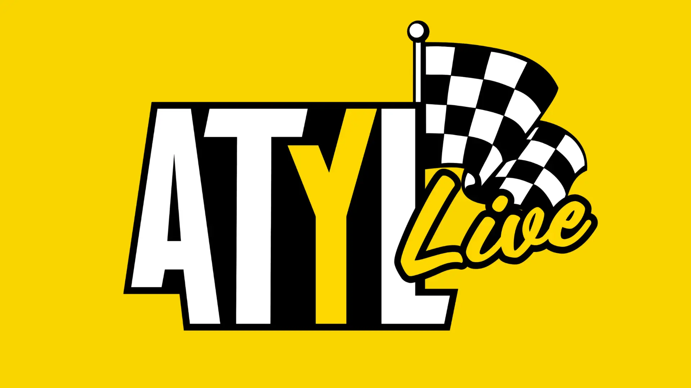

We tell the heritage side of North Wilkesboro — the family that came up on those bullrings, the years the gate stayed chained. When the green flag drops this weekend, here's who we turn up for the live side of it. Our take is in Nobody Told Them, and the podcast that got Ricky's blessing is in Between Cautions.

Above the Yellow Line started in 2021 as Taylor Kitchen's podcast and grew into ATYL Media, a crew that covers the sport their way, with a real love for its history running underneath it all. That history is where we overlap. When North Wilkesboro comes back around this weekend, hers is the live read we point you to — the practice, the paint schemes, the short-track feel — and ours is the story beneath it.
Watch her coverage →